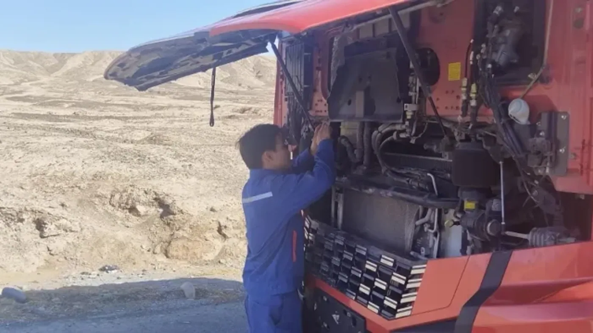

Yuchai International informó el 27 de agosto de 2026 la presentación regional del Dongfeng Tianlong KX con dos motores a gas de alta potencia: YCK15N de 595 hp y YCK16LN de 660 hp, ambos identificados como versión 2.0. El encuentro se realizó en Xianyang, provincia de Shaanxi, y estuvo orientado al mercado del noroeste de China.
El fabricante relaciona estas versiones con recorridos de larga distancia, pendientes, altura y bajas temperaturas. Atribuye mejoras de funcionamiento a sus calibraciones y cambios técnicos, pero el comunicado no aporta un protocolo comparativo completo que permita calcular el beneficio para cualquier flota.
Se trata de una novedad del mercado chino, no de la llegada de este modelo a Argentina. Tampoco debe confundirse el Tianlong KX con el Captain D 1830 que ya tratamos en el blog: compartir marca no significa compartir categoría, motorización o disponibilidad comercial.
Por qué no alcanza con mirar la potencia
Análisis de Zabala Repuestos. Una cifra elevada puede llamar la atención, pero una operación necesita mucho más que un máximo de catálogo. Para elegir un vehículo interesa conocer cómo se combina el motor con la transmisión, los ejes y la aplicación prevista, además de qué documentación acompaña a esa configuración.
La comparación debe partir del trabajo: carga habitual, recorrido, frecuencia de viajes y necesidades de servicio. Si dos ofertas están pensadas para usos diferentes, ordenar sus potencias de mayor a menor no permite decidir cuál responderá mejor a la empresa.
Gas no define por sí solo el abastecimiento
Antes de evaluar una unidad a gas, conviene pedir la especificación exacta del combustible, el almacenamiento y el sistema de carga. No corresponde asumir que una infraestructura existente puede atender cualquier vehículo porque utiliza una denominación parecida.
En una eventual evaluación argentina, el recorrido debería contrastarse con puntos de abastecimiento realmente compatibles, sus horarios y alternativas. La disponibilidad de combustible en una ciudad no resuelve automáticamente la organización de una ruta completa, especialmente si el trabajo exige desvíos o entregas fuera del itinerario habitual.
El respaldo se consulta por configuración
La presencia de una marca en el país no garantiza atención para cada modelo que comercializa en otro mercado. Es necesario confirmar quién puede diagnosticar la versión concreta, qué información técnica tiene y cómo obtiene sus componentes.
Para un taller o una casa de repuestos, el número de chasis y la identificación del motor siguen siendo fundamentales. Un parecido externo no demuestra equivalencia. La consulta correcta reduce el riesgo de presupuestar una pieza que no corresponde a la unidad que necesita volver al servicio.

Cómo interpretar las promesas de eficiencia
Cuando un fabricante anuncia una mejora, conviene preguntar contra qué vehículo la compara. También interesa conocer carga, distancia, clima y período de medición. Sin esa referencia, el resultado puede describir una experiencia válida pero imposible de trasladar a otra flota.
Un ejemplo conceptual ayuda: gastar menos por unidad de combustible no necesariamente significa gastar menos por viaje, si cambian el recorrido o los tiempos de abastecimiento. La evaluación debería reunir todas las variables relevantes y dejar explícitas las que todavía son estimaciones.
La disponibilidad también forma parte del costo
Antes de incorporar una tecnología diferente, es razonable estudiar las consecuencias de una inmovilización. ¿Hay otra unidad para continuar? ¿El taller puede recibirla? ¿Quién confirma el diagnóstico y el plazo de la pieza? Esas respuestas importan tanto como el precio inicial.
La capacitación del personal debe estar contemplada desde el comienzo. Los sistemas de combustible requieren procedimientos específicos; una experiencia previa con otra motorización no sustituye la formación correspondiente. No conviene improvisar adaptaciones ni intervenir componentes fuera de las indicaciones del fabricante.
Qué datos pedir antes de una prueba
- Ficha técnica de la versión ofrecida y descripción de la aplicación.
- Combustible, abastecimiento y almacenamiento requeridos.
- Plan de mantenimiento y tareas autorizadas al operador.
- Respaldo, documentación y disponibilidad de repuestos.
- Condiciones de la medición que respalda cada mejora anunciada.
- Criterios de evaluación y contingencia para un piloto.
La presentación confirma que los fabricantes siguen desarrollando alternativas a gas para trabajos exigentes. Para el lector argentino, su valor está en conocer esa evolución sin confundirla con una oferta local. La potencia es una parte de la noticia; el sistema completo y su respaldo son los que determinan si una solución puede servir en la práctica.